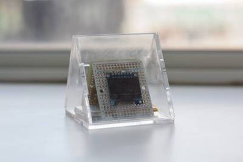
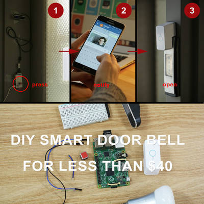

2017-02-09 - Nº 93

Editorial
Esta é a Newsletter Nº 93 que se apresenta com o mesmo formato que as anteriores. Se gostar da Newsletter partilhe-a!
Todas as Newsletters encontram-se indexadas no link.
Esta Newsletter tem os seguintes tópicos:
Faz hoje anos que nascia Wilhelm Maybach. Este industrial alemão nasceu a 1846 em Württemberg. Juntamente com Gottlieb Daimler criaram em 1885, o primeiro carburador que misturava gasolina evaporada com ar para permitir o seu uso eficiente como combustível.
Esta semana ficámos a saber que uma equipa de cientistas da NASA desenvolveu um chip capaz de funcionar na superfície de Vénus. Este desenvolvimento vem permitir que no futuro se possam fazer missões para exploração da superfície deste planeta nosso vizinho. A Intel vai gastar cerca de 7 mil milhões de dólares na construção de uma fábrica de semicondutores. Esta deverá estar pronta dentro de 3 ou 4 anos e estará preparada para a fabricação de chip de 7 nm. A Intel apresentou uma biblioteca open source para Deep Learning. Designada por BigDL esta biblioteca foi desenhada para funcionar na Framework de computação em cluster Apache Spark.
Esta semana também começaram a surgir relatórios de um numero anormalmente alto de falhas de equipamento com o processador Atom C2000 da Intel. A Intel, na revisão da sua documentação da família de chips, indicou que estes têm um problema com o relógio. Esta é uma falha catastrófica que pode inutilizar completamente o equipamento. Trata-se de um problema em que a solução passa pela substituição do hardware.
Na Newsletter desta semana apresentamos diversos projetos de maker assim como alguns modelos 3D que poderão ser úteis. É apresentado também um livro sobre Fundamentos de Bases de Dados.
 João Alves ([email protected])
João Alves ([email protected])
O conteúdo da Newsletter encontra-se sob a licença  Creative Commons Attribution-NonCommercial-ShareAlike 4.0 International License.
Creative Commons Attribution-NonCommercial-ShareAlike 4.0 International License.
Novidades da Semana ^
We finally have a computer that can survive the surface of Venus
"Venus is one of the most inhospitable places in the solar system. Descending through the clouds of boiling sulphuric rain is actually the easy bit—the hard bit is not being cremated by the surface temperature of 470°C (878°F) or crushed by the atmospheric pressure, which is about 90 times that of Earth, the same as swimming 900 metres under water. The longest survival time for a human-made object on Venus was 127 minutes, back in 1981 when the Soviet spacecraft Venera 13 landed there. Not dying for two hours, and netting our first ever colour photos of the planet's surface, was considered a huge success; the probe had only been designed to live for 32 minutes before it was cooked, crushed, and dissolved by its environs. Three more spacecraft followed, all Soviet—Venera 14, Vega 1, Vega 2—but we haven't tried to land anything on Venus since 1985." [...]
Intel Supports American Innovation with $7 Billion Investment in Next-Generation Semiconductor Factory in Arizona
"Intel Corporation today announced plans to invest more than $7 billion to complete Fab 42, which is expected to be the most advanced semiconductor factory in the world. The high-volume factory is in Chandler, Ariz., and is targeted to use the 7 nanometer (nm) manufacturing process. It will produce microprocessors to power data centers and hundreds of millions of smart and connected devices worldwide. The announcement was made by U.S. President Donald Trump and Intel CEO Brian Krzanich at the White House. The completion of Fab 42 in 3 to 4 years will directly create approximately 3,000 high-tech, high-wage Intel jobs for process engineers, equipment technicians, and facilities-support engineers and technicians who will work at the site. Combined with the indirect impact on businesses that will help support the factory’s operations, Fab 42 is expected to create more than 10,000 total long-term jobs in Arizona." [...]
Intel Unveils Deep Learning Library for Apache Spark
"Intel today announced the open-source BigDL, a Distributed Deep Learning Library for the Apache Spark* open-source cluster-computing framework. The deep learning library is part of Intel Corporation’s strategy for enabling state-of-the-art Artificial Intelligence in the industry. Announced last November, the strategy detailed Intel’s work to make AI training and tools broadly accessible to developers through the Intel® Nervana™ AI Academy. The BigDL features an efficient large-scale distributed deep learning library built on Spark architecture that makes deep learning more accessible to big data users and data scientists. BigDL enables the exporting of AI expertise to data scientists now working across thousands of applications in hundreds of fields." [...]
Intel's Atom C2000 chips are bricking products – and it's not just Cisco hit
"Intel's Atom C2000 processor family has a fault that effectively bricks devices, costing the company a significant amount of money to correct. But the semiconductor giant won't disclose precisely how many chips are affected nor which products are at risk. On its Q4 2016 earnings call earlier this month, chief financial officer Robert Swan said a product issue limited profitability during the quarter, forcing the biz to set aside a pot of cash to deal with the problem." [...]
A guide to Friday's comet-eclipse-full-moon triple feature
"The closest comet approach in decades will give skywatchers something to hunt for as a lunar eclipse obliges by darkening the light of the "snow moon." Even if you aren't a space nerd whose idea of a good time is craning your neck to stare into the vast nothingness of space on a frigid evening, this Friday the heavens will put on a show worth heading outdoors for. A penumbral lunar eclipse, a full "snow moon" and a comet will be spicing up the night sky February 10 in a rare convergence of such celestial happenings. We'll start with our nearest neighbor. February brings the full moon known as the "snow moon" because this month in North America tends to see a lot of the white fluffy stuff. This snow moon will be special though because, well... we'll all get in its way in a sense when the penumbral lunar eclipse takes place Friday. The eclipse will be at least partly visible from most but not all places on Earth (sorry Australia and Japan). The moment of greatest eclipse is at 4:43 p.m. PT and the eclipse will then dissipate until it completes a little over two hours later, according to the U.S. Naval Observatory." [...]
Outras Notícias
- New Google Brain research brings the ‘zoom and enhance’ trope to reality
- China is now the world’s largest solar power producer
- ORNL researchers break data transfer efficiency record
- Data Centers of the Future Could Send Bits Over Infrared Lasers Instead of Fiber Optic Cables
- Samsung ARTIK 530 – our newest family member!
Ciência e Tecnologia ^
First ever blueprint unveiled to construct a large scale quantum computer
"An international team, led by a scientist from the University of Sussex, have today unveiled the first practical blueprint for how to build a quantum computer, the most powerful computer on Earth. This huge leap forward towards creating a universal quantum computer is published today (1 February 2017) in the influential journal Science Advances. It has long been known that such a computer would revolutionise industry, science and commerce on a similar scale as the invention of ordinary computers. But this new work features the actual industrial blueprint to construct such a large-scale machine, more powerful in solving certain problems than any computer ever constructed before. Once built, the computer’s capabilities mean it would have the potential to answer many questions in science; create new, lifesaving medicines; solve the most mind-boggling scientific problems; unravel the yet unknown mysteries of the furthest reaches of deepest space; and solve some problems that an ordinary computer would take billions of years to compute." [...]

1000 times more efficient nano-LED opens door to faster microchips
"With electrical cables reaching their limits, optical connections like fiberglass are increasingly becoming the standard for data traffic. Over longer distances almost all data transmission is optical. Within computer systems and microchips, too, the growth of data traffic is exponential, but that traffic is still electronic, and this is increasingly becoming a bottleneck. Since these connections (‘interconnects’) account for the majority of the energy consumed by chips, many scientists around the world are working on enabling optical (photonic) interconnects. Crucial to this is the light source that converts the data into light signals which must be small enough to fit into the microscopic structures of microchips. At the same time, the output capacity and efficiency have to be good. Especially the efficiency is a challenge, as small light sources, powered by nano- or microwatts, have always performed very inefficiently to date." [...]
Watching computers think
"Neural networks are commonly used today to analyze complex data – for instance to find clues to illnesses in genetic information. Ultimately, though, no one knows how these networks actually work exactly. That is why Fraunhofer researchers developed software that enables them to look into these black boxes and analyze how they function. The researchers will present their software at CeBIT in Hannover from March 20 to 24, 2017 (Hall 6, Booth B 36). The problem is that it isn’t just researchers who currently don’t know exactly how neural networks function step by step, or why they reach one result or another. Neural networks are, in a sense, black boxes – computer programs that people feed values into and that reliably return results. If you want to teach a neural network, for instance, to recognize cats, then you instruct the system by feeding it thousands of cat pictures. Just like a small child that slowly learns to distinguish cats from dogs, the neural network, too, learns automatically. “In many cases, though, researchers are less interested in the result and far more interested in what the neural network actually does – how it reaches decisions,” says Dr. Wojciech Samek, head of the Machine Learning Group at Fraunhofer Heinrich Hertz Institute HHI in Berlin. So Samek and his team, in collaboration with colleagues from TU Berlin, developed a method that makes it possible to watch a neural network think." [...]
Scientists develop ‘lab on a chip’ that costs 1 cent to make
"Researchers at the Stanford University School of Medicine have developed a way to produce a cheap and reusable diagnostic “lab on a chip” with the help of an ordinary inkjet printer. At a production cost of as little as 1 cent per chip, the new technology could usher in a medical diagnostics revolution like the kind brought on by low-cost genome sequencing, said Ron Davis, PhD, professor of biochemistry and of genetics and director of the Stanford Genome Technology Center. A study describing the technology was published online Feb. 6 in the Proceedings of the National Academy of Sciences. Davis is the senior author. The lead author is Rahim Esfandyarpour, PhD, an engineering research associate at the genome center. The inexpensive lab-on-a-chip technology has the potential to enhance diagnostic capabilities around the world, especially in developing countries. Due to inferior access to early diagnostics, the survival rate of breast cancer patients is only 40 percent in low-income nations — half the rate of such patients in developed nations. Other lethal diseases, such as malaria, tuberculosis and HIV, also have high incidence and bad patient outcomes in developing countries. Better access to cheap diagnostics could help turn this around, especially as most such equipment costs thousands of dollars." [...]
Mimicking nature’s cellular architectures via 3D printing
"Nature does amazing things with limited design materials. Grass, for example, can support its own weight, resist strong wind loads, and recover after being compressed. The plant’s hardiness comes from a combination of its hollow, tubular macrostructure and porous, or cellular, microstructure. These architectural features work together to give grass its robust mechanical properties. Inspired by natural cellular structures, researchers at the Wyss Institute for Biologically Inspired Engineering at Harvard University, the Harvard John A. Paulson School of Engineering and Applied Sciences (SEAS), and MIT have developed a new method to 3D print materials with independently tunable macro-and microscale porosity using a ceramic foam ink." [...]
Engineers harness stomach acid to power tiny sensors
"Researchers at MIT and Brigham and Women’s Hospital have designed and demonstrated a small voltaic cell that is sustained by the acidic fluids in the stomach. The system can generate enough power to run small sensors or drug delivery devices that can reside in the gastrointestinal tract for extended periods of time. This type of power could offer a safer and lower-cost alternative to the traditional batteries now used to power such devices, the researchers say." [...]
Protecting quantum computing networks against hacking threats
"As we saw during the 2016 US election, protecting traditional computer systems, which use zeros and ones, from hackers is not a perfect science. Now consider the complex world of quantum computing, where bits of information can simultaneously hold multiple states beyond zero and one, and the potential threats become even trickier to tackle. Even so, researchers at the University of Ottawa have uncovered clues that could help administrators protect quantum computing networks from external attacks. “Our team has built the first high-dimensional quantum cloning machine capable of performing quantum hacking to intercept a secure quantum message,” said University of Ottawa Department of Physics professor Ebrahim Karimi, who holds the Canada Research Chair in Structured Light. “Once we were able to analyze the results, we discovered some very important clues to help protect quantum computing networks against potential hacking threats.”" [...]
Toward all-solid lithium batteries
"Most batteries are composed of two solid, electrochemically active layers called electrodes, separated by a polymer membrane infused with a liquid or gel electrolyte. But recent research has explored the possibility of all-solid-state batteries, in which the liquid (and potentially flammable) electrolyte would be replaced by a solid electrolyte, which could enhance the batteries’ energy density and safety. Now, for the first time, a team at MIT has probed the mechanical properties of a sulfide-based solid electrolyte material, to determine its mechanical performance when incorporated into batteries." [...]
Wave of the future: terahertz chips a new way of seeing through matter
"Electromagnetic pulses lasting one millionth of a millionth of a second may hold the key to advances in medical imaging, communications and drug development. But the pulses, called terahertz waves, have long required elaborate and expensive equipment to use. Now, researchers at Princeton University have drastically shrunk much of that equipment: moving from a tabletop setup with lasers and mirrors to a pair of microchips small enough to fit on a fingertip. In two articles recently published in the IEEE Journal of Solid State Circuits, the researchers describe one microchip that can generate terahertz waves, and a second chip that can capture and read intricate details of these waves." [...]
Sorting machine for atoms
"Physicists at the University of Bonn have cleared a further hurdle on the path to creating quantum computers: in a recent study, they present a method with which they can very quickly and precisely sort large numbers of atoms. The work has now been published in “Physical Review Letters”. Imagine you are standing in a grocery store buying apple juice. Unfortunately, all of the crates are half empty because other customers have removed individual bottles at random. So you carefully fill your crate bottle by bottle. But wait: The neighboring crate is filled in exactly the opposite way! It has bottles where your crate has gaps. If you could lift these bottles in one hit and place them in your crate, it would be full straight away. You could save yourself a lot of work. Unfortunately, such solutions don’t (yet) exist for half-empty drinks crates. However, physicists at the University of Bonn want to sort thousands of atoms however they like in the future in this way – and in a matter of seconds. Around the world, scientists are currently looking for methods that enable sorting processes in the microcosm. The proposal by Bonn-based researchers could push the development of future quantum computers a crucial step forward. This allows atoms to interact with each other in a targeted manner in order to be able to exploit quantum-mechanical effects for calculations. In addition, the particles have to be brought into spatial proximity with one another." [...]
Modelos 3D ^
Com a disponibilidade de ferramentas que permitem dar azo a nossa imaginação na criação de peças 3D e espaços como o thingiverse para as publicar, esta rubrica apresenta alguns modelos selecionados que poderão ser úteis.
4 x AA Battery Holder
"I do a lot of arduino projects so wanted to print my own battery boxes. I purchased terminals from ebay here. I couldn't find a box on here which used them so designed this one. Hopefully it will come in handy for someone else." [...]
Lab Power Supply
"An inexpensive, adjustable lab power supply. Requires an external DC power supply with a voltage somewhere between 12-30V to function. I use an old laptop-charger. Based on a XL4015 DC-DC buck converter from ebay (link in BOM section). This provides an adjustable output-voltage from about 1.4V, up to the input voltage (nearly). Current limit can be set from 0mA, up to about 5A. The converter is rated for 75W, but if you plan to use this much power over longer periods, you will probably need extra cooling. The converter module has thermal shutdown and short circuit protection built in. Approximate total cost of parts (excluding printed parts and external PSU): 16$. Dimensions: 14cm x 6cm x 5cm" [...]
Parametric PCB Mounting Bracket/Stand Off
"Lets you quickly make mounting plates/stand offs for the various PCB's you have in your projects. Works with PCB that have a symmetrical mounting hole pattern." [...]
Documentação ^
A documentação é parte essencial do processo de aprendizagem e a Internet além de artigos interessantes de explorar também tem alguma documentação em formato PDF interessante de ler. Todos os links aqui apresentados são para conteúdo disponibilizado livremente pelo editor do livro.
Foundations of Databases
"The book is aimed at an eclectic audience. Most broadly, it should be a useful resource for any computer scientist or mathematician who wishes to find out what database theory is about. Database researchers and practitioners should find it useful as a reference to both classical material and to advanced topics, otherwise scattered in sometimes hard-to-read papers. As a textbook, it is aimed at graduate students and seniors who would use the book as the main text in a database theory course or as complementary material in a database systems course. The book is fairly self-contained. Some needed background is provided concisely in the preliminaries, and the reader is told where more can be found." [...]
Projetos Maker ^
Diversos Projetos interessantes.
Dual Sensor Gauss Meter for Testing Magnet Strength
"In this instructable, I will show you how to make a Gauss meter than can measure the strength of magnets so you can compare different magnets you have. It measures the magnets in units called Gauss and has a relatively linear range from 0-4000 Gauss. It will measure beyond that but the numbers beyond 4000 Gauss should only be used for comparison purposes. In addition to measuring the field strength, it also detects the polarity of the magnet and will show North or South, respectively. My favorite part about this design is the ON/OFF switch. It's hidden in the enclosure so the meter can only be turned on and off with a magnet. Since this unit is meant to measure magnets, you're sure to have one on hand. You can use the same latching magnetic switch I designed for many other things like a secret compartment lock." [...]
The Gray-1, A homebrew CPU exclusively composed of memory
"This article presents an very original computer. Its CPU is only made of ROM, but it can execute complex programs, such as finding all the solutions of the 8-queens problem. Since the 1970s, computers are essentially composed of microprocessors, memory, and peripherals such as keyboard, mouse, display, network interface The microprocessor plays a central role of running the programs located in the working memory. Most people, even among computer experts, see the microprocessor as a black box whose operation is too complex to be understood. Creating a microprocessor from very simple components is a good way to deeply understand how a computer works." [...]
NeoPanel controlled by Arduino
"In this instructable we have created a 10x10 led matrix controlled by a homemade Arduino Leonardo. In this matrix, you will be free to program the behavior of the leds as you desire. Our main objective is to create a spectrum analyzer that will represent the different frequencies of a song in the matrix." [...]
RadArduino - Radar Made With Arduino Leonardo and Processing
"This project is a sonar (Sound Navigator And Ranging) that we have implemented with a Arduino Leonardo and we have depicted in Processing 3. Its works in the following way: A stepper motor rotate 360º sideways, and when reaches the end, change the direction and rotate another 360º. The reason why the motor doesn't move is because is pinned to the base. While stepper motor is rotating, the ultrasonic sensor collects information constantly. This information is sent to Processing through the serial port. The program that we have created in Processing have two ways for representing the data collected. The first one is with lines and the second draws circles at the distance that ultrasonic sensor has detected the object. The representation mode it can be changed if we press key 'space bar'. When we change the representation mode, the radar is calibrates automatically with the encoder installed. At the starting, the radar doesn't do anything until the Processing code runs and send the signal to start. That way Arduino and Processing initiate at the same time. Before start explaining the steps, you can play the video at the top to see how it works running all together." [...]

Wireless Remote Sensing with Wemos D1 mini, Arduino IDE, Raspberry Pi and lighttpd web server
"For a long time now I've wanted wireless temperature sensors scattered around the house and garden reporting their temperatures regularly to a central server. It's not something I really need, but something nice to have. I'd originally planned to do it with a RasPiO Duino or Arduino nano and inexpensive NRF24L01 radio boards. Albert @winkleink Hickey, a friend of mine, who also runs the Egham Jam put me onto these when he did his buttonflash game. Albert has a useful hobby of trawling ebay for bargain-basement electronics. A few weeks ago he showed me the Wemos D1 mini." [...]

It's 5 O'Clock Somewhere
"Welcome to our group instructables page. Here, we'll break down all the steps you'll need to build the "It's 5 O'Clock Somewhere" portable clock. What is it? It's a portable clock, connected to your local wifi, or paired with your phone, to show you the current time and where in the world it's 5 o'clock. A tongue in cheek take on the expression "it's 5 o'clock somewhere", which alludes to the time in which the end of the work day has arrived, and happy hour has begun. Our device is a constant reminder that somewhere, someone is enjoying the end of their day." [...]
Programmable Sequenced Wavetable Synthesizer
"For our final project, we created a wavetable synthesizer capable of playing back short user-programmable sequences with a large range of timbres. We decided to create a fun, easy-to-use wavetable synthesizer with just enough parameters to offer a large sonic range, while limiting the controls to keep the user interface clean and as unconfusing as possible. This goal was driven by the desire to make a useful product relevant to the current digital synthesizer market, an area in which wavetable synthesis is very popular. This method of synthesis allows for arbitrary waveforms, as well as blends of multiple waveforms, allowing for a number of tones only limited by the storage capacity of the device." [...]
M&Ms and Skittles sorting machine
"A sorting machine that is able to sort candy by colour has been on my to-do list for multiple years. I finally managed to complete it after working on it for several months in my free time. It uses an Arduino controller, stepper motors, an RGB colour sensor and 3D-printed parts to sort several types of candy by their respective colours." [...]
Complete Digital Clock including Alarm and Motion Sensor
"I have done several designs of digital clocks for Arduino using LEDs and LCD displays, but this one is more special because I added other features like alarm and motion sensor (PIR)." [...]
Controlling LED with NodeMCU ESP8266 and Quark D2000 board
"This instructable will teach you how to connect a NodeMCU ESP8266 to an Intel Quark D2000 board. At the end of this tutorial, you will be able to control an LED connected to the D2000 over wifi! You will choose whether to turn on or off the LED, that command will be send over wifi to the ESP8266, and the ESP8266 will process the information, and send the correct data to the D2000 to turn on or off the LED. When I was first getting started, it was difficult to find good tutorials for getting started with the ESP8266 and the D2000 board. I finally managed to figure out how to program the ESP8266 with the Arduino IDE. However, it was harder to find a good explanation and tutorial on having pin input for the D2000 board. I hope this tutorial helps you learn how these work!" [...]
The calculator project
"I had the calculator class running on my Mac. I had some Arduinos, seem to always have some about, and a 2.8” capacitive touchscreen from Adafruit. I put the two together and, well.. It just didn’t have enough RAM to do much. I got it to work. But I could only put on a subset of the buttons. Sad day, so I put it away and went on to other things. Then one day I ran across the Uncanny Eyes project by Phillip Burgess. That introduced me to the Teensy 3.2 µ processor. Its like an tiny Arduino with LOTS of RAM." [...]
12V @ 120mA Transformerless Power Supply
"The circuit provided here is a transformer-less non-isolated power supply which is capable of delivering an output of 12V at 120mA current for an input voltage varying from 85VAC-265VAC. The LNK304 is the heart of this circuit which supports buck boost and flyback topologies. This project is low in cost and simple when compared other tramsformer-less power supplies." [...]
Testing a Custom IoT Framework by Controlling an LED: RIOT (RealTime Internet of Things)
"RIOT (Realtime Internet of Things) is a free software package (non-commercial) I created that makes using the ESP8266 with microcontrollers very simple. The ESP8266 module is a very brilliant and underestimated Wi-Fi module that can turn any serial port (be it on a microcontroller or an old Z80 computer) into an internet-enabled device. However, the ESP8266 AT commands can be particularly tricky and, if not coded correctly, can result in lockups. The RIOT framework provides several functions that make using the ESP8266 a breeze. Firstly, it contains an interpreter for data going in and out of the ESP8266. Secondly, it provides simple and easy-to-use functions to get a microcontroller Wi-Fi enabled in almost no time. Thirdly, the code utilizes ROM memory as much as possible so that very-small-RAM micros (256 bytes of RAM, for example) can still be internet-enabled. RIOT also has a server package that is written in VB.net (for simplicity reasons) which cannot be easier to use in a project. In this project, we will look at how to use RIOT with any PIC18 device (this project will specifically use a PIC18F25K20) and use a computer to turn an LED on and off." [...]
Vinduino, a wine grower's water saving project
"If you want to learn about saving water, talk to a farmer. California farmers, including myself, voluntarily aim to reduce agricultural water consumption by 25%. This reduction (25% of 42 million acre feet/year) is more than the annual urban water use (8 million acre feet/year), much more effective than any residential water reduction can achieve. The Vinduino project (Vineyard + Arduino) started out of necessity to better manage irrigation in my Southern California vineyard. In order to be of the greatest possible use to the public, the Vinduino project is open source, affordable, and easy to build. " [...]

DIY smart home doorbell for less than $40!
"Smart doorbells are an amazing tool but still an expensive one (~$200)! Today in this Instructables, we propose to help you build your own smart home doorbell for less than $40. We will guide you through the basic core steps to build the doorbell with simple components and no need for coding or manual skills. If you’re passionate about woodwork and/or 3D printing, you can of course go further and give your doorbell a beautiful case (if you do so please share with us!). For the sake of simplicity, we will keep our explanations to the “raw” version of the doorbell." [...]
How to implement Finite State Machines using Energia
"Finite State Machines (FSM) are widely used in embedded applications and are well suited to controlling things that are event driven. The potential benefits include: A formal method to capture and test all states and inputs, easily defined logic, and simpler code to extend and maintain. In this introduction a simplified alarm system will be created with a Texas Instruments LaunchPad and Energia." [...]
DIY Alarm Clock
"After designing the "Clock Set Date Time" and hearing the suggestion of "maewert" I thought it would be a good idea and also useful, add a "wake-up alarm." A small change to the code and adding a few components: Here's "the Alarm Clock"" [...]
Jammarduino DUE - DIY PC to Jamma interface for Arcade Cabinets
"This instructable will show you how to create a simple shield for Arduino DUE to interface a genuine arcade machine with low resolution CRT and jamma connector to your PC. The shield main pourposes are: to amplify the video signal coming off the video card (too low for a genuine Arcade CRT monitor); to protect the low resolution CRT monitor from out of frequency sync signals; to "translate" button presses on arcade control panel to something the PC can handle. Notice: the shield DOES NOT force the video sync signal to low frequencies: you are in the need for some specific software for that. I suggest you to use CRT emudrivers or Soft15KHz." [...]
ESP8266 OLED Clock IoT Using AJAX
"This video demonstrates using an ESP8266-12E and an OLED display as a digital clock. While clocks may be ubiquitous these days, this project demonstrates some useful concepts that can be used in a variety of applications. The Arduino IDE is used to develop a sketch that access a NPT time server to accurately set the date and time. The date and time are then displayed on an OLED display and also via a web browser accessing the ESP8266 web server. The web page allows the setting of options like Time Zone, 24 hour clock, daylight savings and a variable to control the time server update interval. The web page uses AJAX to update the time without reloading the entire web page. There is also a brief overview of the source code sketch in the video." [...]
Pylepton Zero
"The Pylepton Zero is a portable demonstration platform for the FLIR Lepton thermal imager and our pylepton software library for the Raspberry Pi. Pylepton lets you quickly get images from Lepton on a Raspberry Pi. First we designed an enclose/stand to hold all of the components together." [...]
Arduino Controlled Kitchen Timer
"All of you must have experienced this that you have something being cooked on your gas stove while on the other side you get busy watching TV or get a deep conversation that you realize on detecting a smell that it was completely spoiled just because of your carelessness. This little Arduino controlled device is a simple solution to the problem! This is basically a mini battery operated portable kitchen timer which can be set to any number of hours and minutes and tells you with buzzer beeps that the provided time is over. The buzzer is loud enough to be heard even in another room thus can save your dishes from turning burn black. Wonder how great would it be if you made one yourself? Here's how to! When talking about the inner workings, this project consists of Arduino as the brain, a Liquid crystal display to display time, a buzzer to notify you, two buttons to enter hours and minutes and two LEDs to acting as indicators. Apart from this, it is operated using a 9v battery thus making it small, light weight and portable. As you may have noticed, all of the parts are one of the most basic ones thus you won't have to hunt around. You can enter the number of hours as well as minutes which makes it an accurate device to suite your needs. You will require a maximum of two to three hours to make it." [...]
Laser Scanning Microscope
"Besides other things I'm very interested in lasers, the microscopic world, and to make things visible that aren't visible with normal means. I also find it a sport to use things for purposes where they are not designed for (aren't we all ;) ). Combining the above I came up with a solution for an idea I have for ages: making a Laser Scanning Microscope (LSM)! Nothing fancy as a Fluorescent Confocal Laser Scanning Microscope, but a straight forward LSM." [...]
Illuminate Me
"This application enables the Adafruit Feather Huzzah or any ESP8266 chip to receive messages from an IoT-Hub that will light up a Neopixel ring or jewel when a tweet is made. This project uses a Logic App to watch for a new tweet based on dynamic search terms. Upon triggering, a message containing the tweet content is sent to a Function app function which then send a messageto the device through an IoT Hub. The device will then send a reply back to the IoT Hub to, usually to inform the resource that the message was received and can be removed from the queue. The great thing about using a Logic App is that is has so many different connectors. So, if desired, the Logic App can be triggered when a new Facebook post occurs, when a new OneDrive document is uploaded, when a Wunderlist task reminder occurs, on a reoccuring timer, or when one of the many other options for triggers happens." [...]
\/o!ce Oper@ted Robot
"In this project, it is aimed to make a contribution to this dream. Controlling the machines and environment with speech makes human life easier and more comfortable. This project is a simple implementation of this approach. A robot is controlled by voice commands. Voice command is taken through a microphone, processed in computer and sent to the robot and finally the robot acts accordingly. When we say voice control, the first term to be considered is Speech Recognition i.e. making the system to understand human voice. Speech recognition is a technology where the system understands the words (not its meaning) given through speech. This guide will show you all the steps required to build your own voice operated robot vehicle." [...]
Happy birthday melody on Arduino Nano with 3-way polyphony
"Paying polyphony Happy birthday theme on Arduino Nano with three buzzers on a single mini breadboard. Plug this thing to any USB power source (not only computer) and it will play Happy birthday song infinitely... almost... until you get really sick of it =]" [...]
Reverse-engineering the surprisingly advanced ALU of the 8008 microprocessor
"A computer's arithmetic-logic unit (ALU) is the heart of the processor, performing arithmetic and logic operations on data. If you've studied digital logic, you've probably learned how to combine simple binary adder circuits to build an ALU. However, the 8008's ALU uses clever logic circuits that can perform multiple operations efficiently. And unlike most 1970's microprocessors, the 8008 uses a complex carry-lookahead circuit to increase its performance. The 8008 was Intel's first 8-bit microprocessor, introduced 45 years ago.1 While primitive by today's standards, the 8008 is historically important because it essentially started the microprocessor revolution and is the ancestor of the x86 processor family that are probably using right now.2 I recently took some die photos of the 8008, which I described earlier. In this article, I reverse-engineer the 8008's ALU circuits from these die photos and explain how the ALU functions." [...]
Tic Tac Toe for Nokia 5110
"This is classic game of Tic Tac Toe. It is easy project, all you need for this is: 3 Buttons, Nokia 5110 display, Arduino (I used nano)" [...]
That's all Folks!